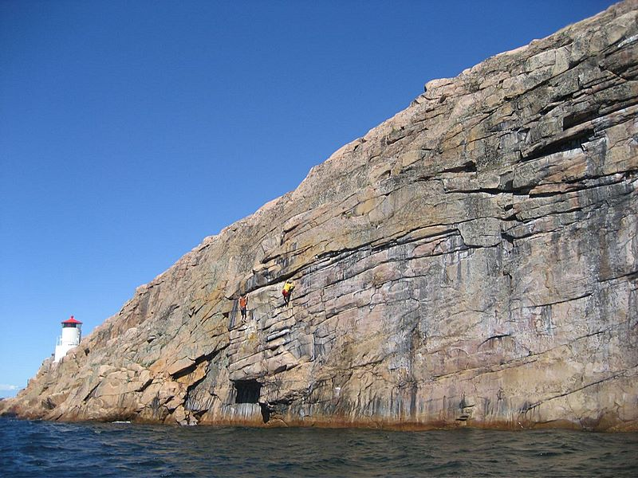
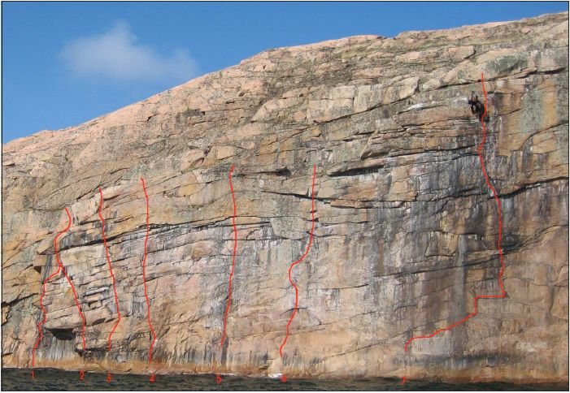
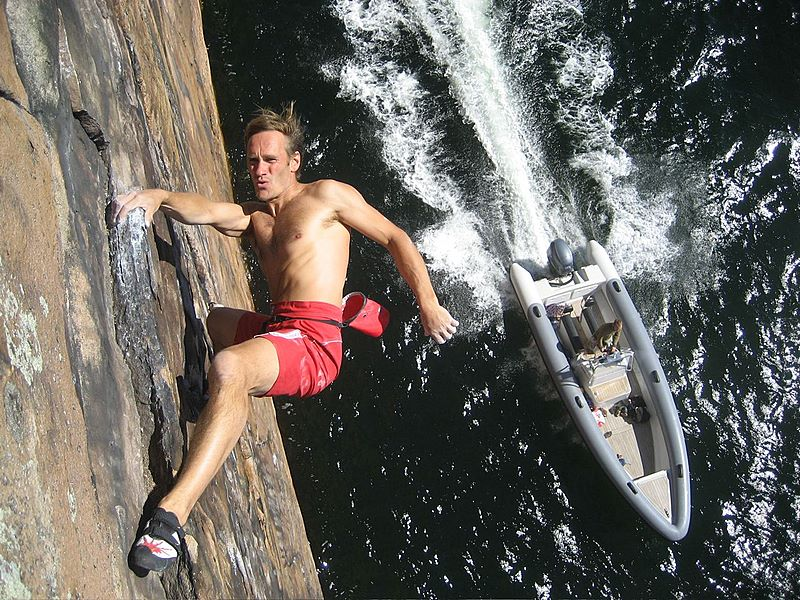
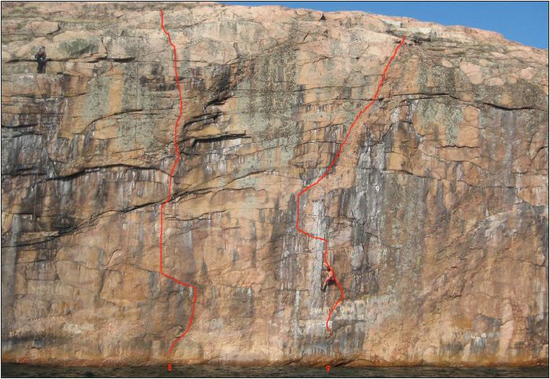

Bläckhall
Lat: 58.31978888888889
Long: 11.388638888888888

<googlemap lat="58.31978888888889" lon="11.388638888888888" zoom="11" type="map">
58.31978888888889,11.388638888888888,Bläckhall
</googlemap>
Ö-klippa ca 1 sjömil norr om Lysekil. Henrik Bolander har satt upp bl a sveriges hårdaste DWS-led, "43 knop" samt flera andra leder. Klippan utvecklades under 2007 av
, tillsammans med
Rödsberget
.
Vägbeskrivning
Egen båt!
Leder
Starten på alla leder är markerade med en svart prick.


- 1
- Strömming
- 6b S0
- Startar till vänster om takformationen. Hangla ut i taket och följ aretéten uppåt. Håll därefter snett höger tills den går ihop med Hopptornet.
- 2
- Hopptornet
- 6a S0
- Startar till höger om takformationen. Linjen snett uppåt vänster. Håll till höger på slutet. Obligatorisk bakåtvolt från utsteget. Allt enligt förstabestigaren.
- 3
- Paddla på
- 6a+ S0
- Startar två meter till höger om Hopptornet. Sedan rakt upp till toppen.
- 4
- Ribben
- 6c+ S1
- Startar till höger om Paddla på. Krux på slutet.
- 5
- GPS
- 7c S0
- Startar i monot. Ihållande till toppen.
- 6
- Saltkråkan
- 7a S0
- Startar 5m till höger om GPS. Rakt upp till stora hyllan.
- 7
- 43 knop
- 7c+ S1
- Startar i vänsterkant av ett gammalt gråmålat fält. Följ den slopiga rampen snett uppåt höger ca 5m. Därefter rakt upp genom det lilla taket.

- 8
- Havspärlan
- 7c+ S1
- Startar på det stora greppet till höger om 43 Knop. Teknisk klättring upp till kristallbandet. Följ sedan kristallbandet rakt upp mot toppen.
- 9
- Svart 58
- 7a+ S0
- Startar i monot vid ”58”. Klättra rakt upp till lilla hyllan. Sedan snett upp vänster till stora rampen. Följ rampen till toppen.
Kategori:DWS
Kategori:Bohuslän
Kategori:Bohuslän
Copyright (C) Permission is granted to copy, distribute and/or modify this document under the terms of the GNU Free Documentation License, Version 1.3